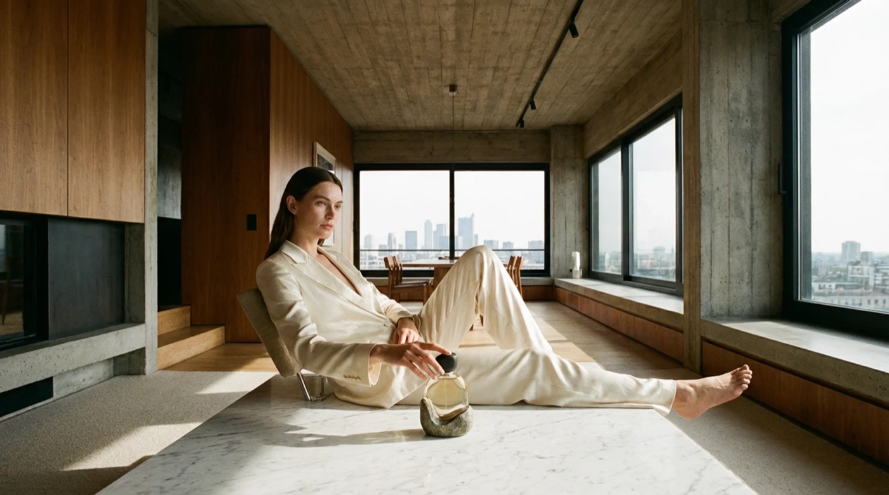

Combining Text-to-Image and Image-to-Image Generation: Prompts, References and Models

Most creative projects need two different kinds of image generation at different stages. Early on, when you are exploring concepts, lighting directions or compositions from scratch, you want a text-to-image model that turns a written description into a fresh frame. Once you have a real product photo, a portrait or a strong initial concept, however, pure text prompting is too unpredictable—you need an image-to-image pass that changes the style, season, background or mood while locking the subject in place.
Starting from a blank canvas with Text to Image
A good text-to-image generator gives you control over three things before you hit generate: the framing ratio, the visual reference cues, and the underlying model family. On Monipix, the Text to Image workspace accepts prompts up to 5,000 characters, lets you attach up to 5 optional reference images to guide the look, and supports four core aspect ratios:
- 1:1 square for avatars, album covers and catalog tiles.
- 16:9 widescreen for blog headers, presentation slides and video storyboards.
- 9:16 vertical for mobile stories, Reels backgrounds and poster layouts.
- 4:3 classic for editorial illustrations and print-style framing.
Instead of cramming fifty adjectives into one sentence, structure your prompt in four layers: Subject and action → Environment and background → Lighting and color palette → Medium or lens style (for example, 35mm editorial photo, warm watercolor, or crisp 3D render).
Keeping identity intact with Image to Image
When you already have a source photo—a person, a couple, a pet or a room—and want to restyle it, switch to the AI image-to-image generator. You can upload up to 5 JPG, PNG or WebP images per generation (up to 10 MB each) and instruct the model on both what to transform and what to leave untouched.
The single most useful habit in image-to-image prompting is stating the anchor constraint explicitly in the first clause:
- Lock the subject first. Write "Keep the exact same face, expression and pose of the person in the photo..." before describing the new outfit, studio lighting or autumn street background.
- Change one variable per iteration. If you want to swap both the background environment and the artistic style, test the environment swap first so you can tell which instruction helped and which one drifted.
- Draft cheap, finish at full resolution. Both Text to Image and Image to Image start at 4 credits per image at 0.5K preview resolution, and cost 8 credits at the default 2K setting. Running two 4-credit drafts to nail the composition before rendering your final 2K or upscaled 4K/8K master cuts credit spend in half.
Choosing across six image models in one workspace
Different models excel at different textures, prompt adherence and artistic styles. Buying a single credit pack (from 500 credits for $29.90, never expiring) or any subscription plan on Monipix unlocks all six image models under one credit balance:
| Model on Monipix | Best suited for |
|---|---|
| Nano Banana 2 & Nano Banana 2 Lite | Fast everyday generation, realistic portraits, costume and scene transforms |
| Nano Banana Pro | High-precision detail, complex lighting and multi-element scenes |
| GPT Image 2 | Strong natural-language instruction following and multi-object layouts |
| Seedream 4.5 & Seedream 5.0 Pro | Stylized illustration, cinematic atmosphere and rich color grading |
Once your 2K generation is finished, you can send it straight into Monipix's AI Image Upscaler for 1 credit to produce an 8K or 16K print-ready file—and every image you generate or upscale on any plan carries full commercial usage rights for work you own, provided you hold the rights to any uploaded source photos and avoid prompts that imitate living artists or reproduce third-party trademarks. Saving your favorite reference frames and prompt structures in your project notes makes it easy to generate matching campaign assets whenever a new product line launches.